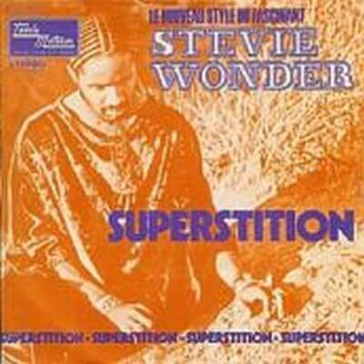

"Superstition" fue el primer sencillo para el álbum Talking Book de Stevie Wonder en 1972 alcanzando el número uno en numerosas listas. Ganó 2 premios Grammy; uno como mejor interpretación vocal masculina de R&B, y otro como mejor canción de R&B. Es una de las mejores canciones funky de todos los tiempos con un de los "grooves" más extraordinarios jamás construido
La revista Rolling Stone clasificó la canción en el puesto número 74 en su lista de las 500 mejores canciones de todos los tiempos. La letra de la canción relata principalmente de las supersticiones, mencionando varias fábulas supersticiosas populares a lo largo de la canción, haciendo frente a los efectos negativos que esas creencias supersticiosas pueden aportar.
Jeff Beck era un admirador de la música de Wonder y Stevie fue informado de esto antes de las sesiones del álbum Talking Book. Aunque en este punto que estaba prácticamente tocando todos los instrumentos en sus canciones por sí mismo, Wonder seguía prefiriendo dejar que otros guitarristas jugasen en sus registros, y por lo tanto le gustaba la idea de una colaboración con Beck, un guitarrista estrella. Un acuerdo fue alcanzado rápidamente por Beck a participar en las sesiones que se convirtió en el álbum Talking Book, a cambio de Wonder escribirle una canción. Mientras entre las sesiones, Beck se acercó con el ritmo del tambor de apertura, que finalmente llevó a la creación de la maravilla de "Superstition". Además del ritmo del tambor de apertura, Beck ha contribuido a algunas de las letras y junto con Wonder creó el primer demo de la canción. En un principio, el plan era que Beck fuese el primero en publicar la canción con su recién formado power trío Beck, Bogert y Appice. Sin embargo, debido al retraso en el lanzamiento del álbum debut de ese trío, y la opinión del jefe de la Motown Berry Gordy que creía que "Superstition" sería un gran éxito y le ayudaría en la venta del álbum, Wonder terminó accediendo a publicar la canción como el primer sencillo del álbum, anticipándose a la versión de Jeff Beck.
En la grabación, el golpe de apertura de la batería fue interpretado por Wonder en el kit que Scott Mathews proporcionó en el Record Plant en Hollywood. El funky clavinet riff fue tocado con un modelo Hohner Clavinet C, y el bajo sintetizado, también se llevó a cabo por medio de Stevie Wonder. La canción también cuenta con trompeta y saxo tenor, interpretados respectivamente por Steve Madaio y Trevor Laurence.
Video
Una de las interpretaciones más espectaculares fue su intervención en el programa infantil Sesame street, más conocido en España como Barrio Sésamo, o Plaza Sésamo en Hispanoamérica.

Letra
Very superstitious, writings on the wall,
Very superstitious, ladders bout to fall,
Thirteen month old baby, broke the lookin glass
Seven years of bad luck,
the good things in your past.
Muy supersticioso. Pintadas en la pared.
Muy supersticioso. Pasando bajo la escalera.
Una niña de 13 meses de edad, rompe el espejo.
7 años de mala suerte,
todo aquello que mereció la pena de tu pasado
When you believe in things
that you dont understand,
Then you suffer,
Superstition aint the way
Cuando tú crees en cosas
que tú no entiendes,
entonces sufres.
La superstición no es el camino.
Very superstitious, wash your face and hands,
Rid me of the problem, do all that you can,
Keep me in a daydream,
keep me goin strong,
You dont wanna save me, sad is my song.
Muy supersticioso. Lavas tu cara y tus manos.
Líbrame del problema, haz todo lo que puedas.
Haz que sea un día de ensueño para mí,
haz que sea fuerte.
No quieres salvarme, triste es mi canción.
When you believe in things
that you dont understand,
Then you suffer,
Superstition aint the way, yeh, yeh.
Cuando tú crees en cosas
que tú no entiendes,
entonces sufres.
La superstición no es el camino, yeh, yeh.
Very superstitious, nothin more to say,
Very superstitious, the devils on his way,
Thirteen month old baby, broke the lookin glass,
Seven years of bad luck,
good things in your past
Muy supersticioso, nada más que añadir.
Muy supersticioso. el diablo se acerca.
Una niña de 13 meses de edad, rompes el espejo.
7 años de mala suerte,
todo aquello que mereció la pena de tu pasado.
When you believe in things
that you dont understand,
Then you suffer,
Superstition aint the way, no, no, no
Cuando tú crees en cosas
que tú no entiendes,
entonces sufres.
La superstición no es el camino, no, no, no